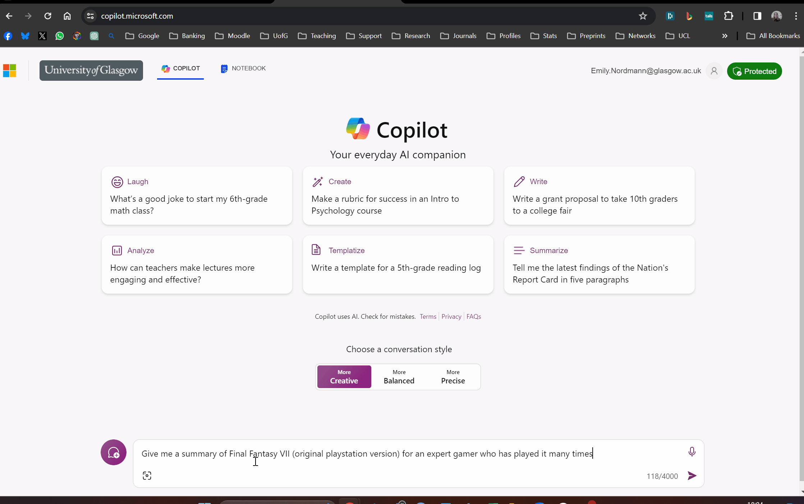

1 Intro to using AI
There are a range of AIs and an even larger number of niche apps and platforms but we’re going to focus on three big hitters: OpenAI’s ChatGPT, Microsoft’s Copilot, and Google’s Gemini. The reason I’ve chosen these three platforms is that they’re all reasonably generic AIs, they all have a free version, you’ve likely heard of them, and you probably already have an account you can use with at least one of them.
I recommend trying out more than one platform. Below I describe the advantages and disadvantages of each as I have experienced, but some of it will come down to personal preference (and do let me know if you have further thoughts on the relative use of each platform).
1.1 A brief introduction
1.1.1 AI model vs AI platforms
There are more qualified people who can explain AI better than I can but a brief but important distinction is between the AI model and the AI platform. The underlying AI model is a Large Language Model (LLM) that essentially does extremely sophisticated predictive text - it’s not thinking, it’s not conscious, it just is very good at deciding what word is likely to come after another word in a way that is human-like1.
Different software companies have created different AI models. Google’s latest model is named Gemini. OpenAI has a series of models it refers to as Generative Pre-trained Transformers (GPT). The explosion in AI in terms of public awareness came about when OpenAI released GPT version 3. They then released version 3.5 and the most recent version is 4.0. The capability of each successive AI is claimed to increase significantly, both in terms of its ability (e.g., to pass standardised tests) and in the human-ness of its responses.
In some cases, the name of the model and the name of the platform you use is the same. So Google’s model is named Gemini and that’s the name of the platform. On the other hand, ChatGPT is the name of the platform, but the underlying model it uses is either GPT3.5 (free version) or GPT4.0 (premium subscription). Additionally, other companies and apps can licence use of the models so Microsoft’s Copilot uses GPT4.0
It isn’t necessary that you understand all of this in detail. The key thing is that the underlying model is the same for some platforms (so you should expect similar capabilities) and that this model can and will update.
1.1.2 Ethics and AI
It’s beyond the scope of this book (and my expertise) to go into much detail about the ethics of AI but I want to acknowledge that in several ways, they’re hugely problematic.
First, and most importantly, AIs are trained on huge corpora of human language. Humans are full of bias and prejudice and consequently, so are our offspring AIs who have been repeatedly found to encode sexist, racist, and abelist views in their outputs.
Second, many of the developers that have produced AI models have done so behind closed doors and are very secretive about exactly what data the models have been trained on. One of the reasons for this is because it is very clearly apparent that many AI models have been given access to copyrighted sources (e.g., books and film scripts) and there are an increasing number of lawsuits being filed although it remains unclear what the future holds given how far and how fast the horse has already bolted.
1.2 AI platforms
1.2.1 ChatGPT
You can sign-up for ChatGPT at https://chat.openai.com/. The free version of ChatGPT uses GPT3.5 whilst you have to pay for a subscription to get access to GPT4.0.
The free version is very fast and for beginner level coding does perform quite well. I’ve also found that ChatGPT is good at understanding the intent of what I want. ChatGPT also makes it easy to save your chat history so that you can continue working in previous chats at a later date. A useful feature is the “regenerate” function whereby if you’re not completely happy with the response, you can quickly ask it to generate another attempt and compare them. ChatGPT also has a mobile app and allows you to share links to saved chats.
The disadvantages of ChatGPT are that it has limited internet connectivity and the information in its database will be restricted. At the time of writing this book, ChatGPT’s training data extends until January 2022, so it can’t tell you about anything that happened after that point (regardless of whether that’s world event or a new R function). Whilst it depends on which version you’re using, it rarely gives you links to sources for where it has found the information.
1.2.2 Copilot
Microsoft Copilot can be accessed at https://copilot.microsoft.com/ and you can sign-in with your Microsoft Account. If you are a University of Glasgow student (and also at many other universities), you can access Copilot through your university account and your Office365 subscription. If you do so, you’ll be able to access the Enterprise version of Copilot. The advantage of using your Enterprise account is that the data is processed more securely and what you input won’t be used to train the model. The price you pay for this security - and it’s such a big price that I don’t use it much for this reason - is that it doesn’t save your chat history so you start each time afresh. If you use a personal account, it will save your chat history, but also use your data to train the model.
However, where Copilot shines is that it has access to the internet and will give you links to where it got its information so it’s easier to verify than ChatGPT. Additionally, they don’t make this clear but if you select the conversation style to be “Creative”, it will use GPT4.0 (which you have to pay for if you use ChatGPT).
I have found that Copilot more frequently doesn’t understand the intent of what I am asking and with the same prompt as ChatGPT will give me a useless answer, but let’s see how I feel about that by the end of writing this book.
My general approach is that if I want to be able to return to my conversation, I use ChatGPT or Gemini. If I want links to sources for a throwaway query, I use Copilot.
There is a Copilot mobile app.

1.2.3 Gemini
You can access Gemini at https://gemini.google.com/ and sign-in with a regular Google account. Gemini was previously known as Bard.
Gemini also makes it easy to save and share your chat history and you can export it easily to Google Docs. Gemini’s strength lies in its connectivity to the internet. Like Copilot, it will provide links as part of its response (although sometimes they don’t always work) and you can also ask it to try and verify its response through using a regular Google search.
Additionally, Gemini has a “modify response” option where you can quickly ask it to make the response shorter, longer, simpler, more causal, or more professional.
Another advantage is that it uses a different model to ChatGPT so if you’re going to combine different AIs, using Gemini may give a different response.
There is a Gemini mobile app, but it isn’t currently available in the UK.
Before writing this book, I had used Gemini less than the others. Let’s see where I end up at the end.

1.3 Activity 1
- Choose one of the AIs and create an account/login. You can also do this activity with multiple AIs to see the difference in output if you’re interested.
1.4 Activity 2
The key difference between using an AI and a regular search engine is that you can shape the output of the AI by “prompt engineering”, which is the phrase used to describe the art of asking the question in a way that gives you the answer you want. It’s easier to show than tell.
Think of a book, TV show, film, or videogame that you know really well (I chose Final Fantasy VII (the original PlayStation version). Ask the AI to give you three different summaries and try out the functionality of each platform. For example, for ChatGPT ask it to regenerate the response, for Gemini, use modify response or Double-check response with Google.
First, ask it for a summary without any additional context e.g., “Give me a summary of Final Fantasy VII (original playstation version)”
Then, ask it for a summary but give it a steer on the intended audience, e.g., “Give me a summary of Final Fantasy VII (original playstation version) for someone who knows nothing about videogames” or “Give me a summary of Final Fantasy VII (original playstation version) for an expert gamer who has played it many times”
Finally, ask it for a summary, but give it a steer on how it should act, e.g., “Act as an expert videogame reviewer for the Guardian. Give me a summary of Final Fantasy VII (original playstation version) for an expert gamer who has played it many times” or “Act as someone who spends too much time on Reddit and thinks they know everything. Give me a summary of Final Fantasy VII (original playstation version) for an expert gamer who has played it many times”.
The key takeaways to remember for your coding journey are:
- Tell it how to act
- Tell it who you are
Reflect on the differences between the summaries - the technicality of the language, the accuracy and nuance of the information, what it chose to focus on, and what it chose to omit. The reason I asked you to create a summary of something you already know well is that you’re aware of where the gaps are. Remember this when you’re asking an AI something you don’t know as well. Just because you can’t see the gaps and the inaccuracies, doesn’t mean they’re not there.
I ran this explanation through Gemini and it was not happy with me and wants you to know that it can also perform tasks like translation, question answering, and even generate creative text formats like poems or code. Calm down Felicia.↩︎